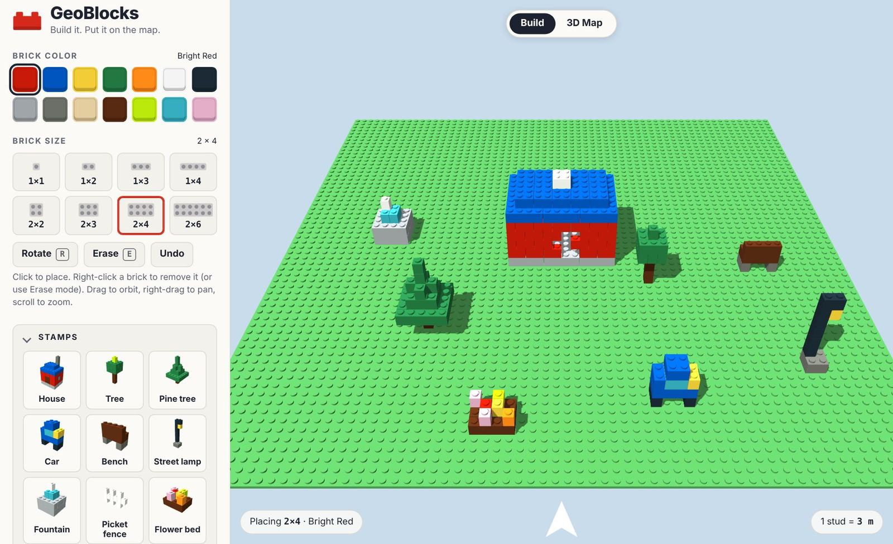
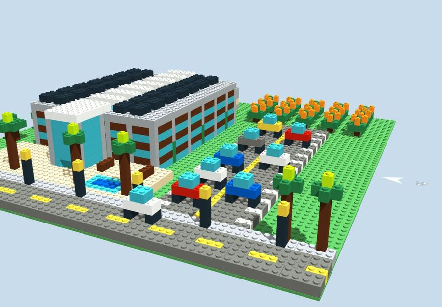
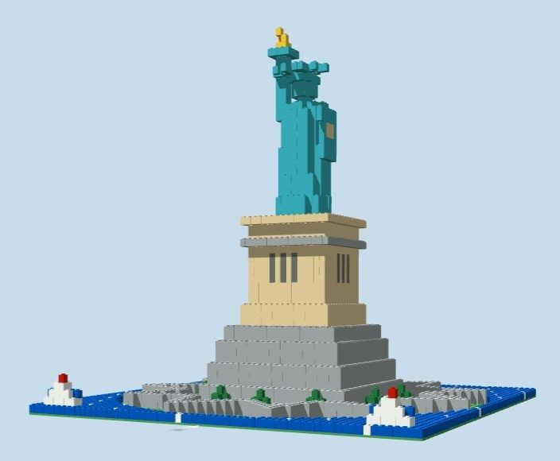
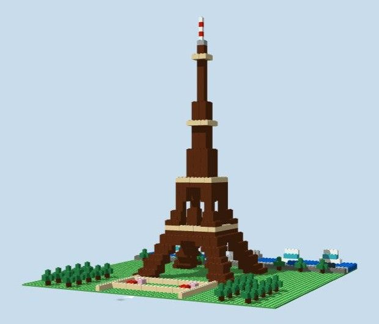
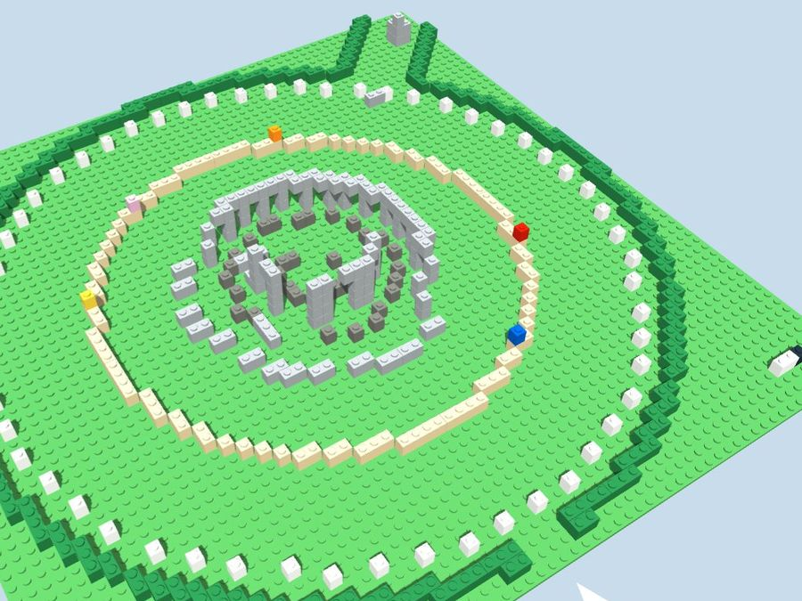
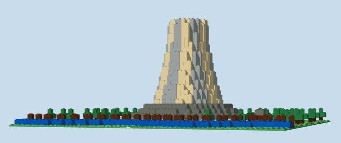
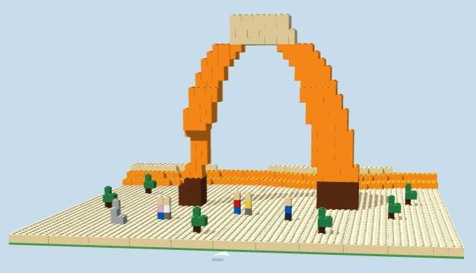

GeographyGrades 6–8
Same House, Different Places
Students move one small house to three places around the world and compare physical and human characteristics in 3D.
- Time
- 45–50 min
- Standards
- Nat'l Geography Std 1, 4 · C3 D2.Geo.2, 5
For teachers · grades 6–12
GeoBlocks is a 3D block builder that runs in a web browser. Students design with colorful building blocks, give their creation a real latitude, longitude, and scale, and then see it standing on real terrain in an ArcGIS 3D map.

How it works
Click to place blocks on a 64 × 64 stud baseplate. Pick from 14 colors and 8 block sizes, or drop in ready-made stamps like a house, tree, or car.
Give the creation a real location in latitude and longitude, a rotation from north, and a real-world scale in meters or feet.
Switch to the 3D Map to see it on ArcGIS terrain and basemaps. Save it, export an image or 3D model, or publish it to ArcGIS Online.
Features
GeoBlocks keeps the tools simple enough for a sixth grader and accurate enough for an architecture class.
Fourteen classic block colors and eight sizes from 1 × 1 to 2 × 6. Rotate with R, erase with a right-click, and undo any mistake.
Nine ready-made objects drop in with one click: house, tree, pine tree, car, bench, street lamp, fountain, picket fence, and flower bed.
Set any latitude and longitude in decimal degrees, or pick a preset: Kansas prairie, Miami Beach, New York City, Paris, Tokyo, Uluru, or Mt Kilimanjaro.
Choose the real length of one stud in meters or feet. Each block is 1.2 studs tall, and the Creation size panel reports the footprint and height in real units.
View creations on real terrain with Esri 3D basemaps. Students can switch basemaps from a gallery or turn the basemap off.
Save work as a .geoblocks file to reopen later. Export a PNG image, a full-color GLB 3D model, or an STL file for 3D printing.
Students with an ArcGIS account can publish a 3D web scene and a hosted 3D layer, choose who can see it, and get a link to share.
The baseplate opens with north at the top, just like a map. A north arrow keeps students oriented while they orbit the view.
Classroom activities
Each lesson is a Word document with a teacher guide, timed steps, standards alignment, an answer key or rubric, and a printable student page. Download and edit them to fit your class.
Students move one small house to three places around the world and compare physical and human characteristics in 3D.
Teams design a park pavilion to a client brief, predict its real size with a scale, then discover what happens to area when the scale changes.
Students place a research station at Kilimanjaro, Uluru, and a beach, explain the processes that shaped each, and raise it above storm surge.
Students build a stepped pyramid, find its volume layer by layer, compare it to V = ⅓Bh, and see how area and volume change with scale.
Groups trace the layered history of Paris's Champ de Mars, New York's Central Park, or Tokyo's Yoyogi Park, then design a marker for the most significant layer.
Students turn a client program into a massing model on a real site and publish it to ArcGIS Online as a 3D web scene for peer review.
Sample creations
Each sample is a ready-made GeoBlocks file placed at its real location and scale. Open one straight in the app to show students what's possible, or download it to share. The samples range from half a meter to ten meters per stud.

Esri's three-story executive headquarters with glass and redwood bands, an atrium with bridges, rooftop solar, palms, and an orange grove.

The copper-green statue with torch, crown, and tablet on its granite pedestal and the eleven-point star of Fort Wood, rotated to face southeast.

Curved legs and arches, both platforms, and the antenna at 330 m, with the Seine, the Pont d'Iéna, and the Champ de Mars aligned to the real city.

The sarsen circle and trilithons as they stand today, with fallen stones, Aubrey holes, the ditch, and the Avenue aligned to the midsummer sunrise.

The 264 m rock tower with striped columns, a talus apron, ponderosa pines, a prairie dog town, and the Belle Fourche River.

A 16 m freestanding arch with uneven legs and layered sandstone colors on slickrock, with hikers for scale.
Getting started
GeoBlocks runs in current versions of Chrome, Edge, Firefox, and Safari. A mouse makes building easier: click to place, right-click to erase, drag to orbit, and scroll to zoom. The 3D Map view needs an internet connection.
Students don't need an account to build. Work is kept in their own browser between visits and can be saved to their computer with Save file. Students' builds aren't uploaded anywhere unless they choose to publish to ArcGIS Online.
Open GeoBlocks, drop a house on the prairie, and fly it to Tokyo. It takes about a minute.
Open GeoBlocks